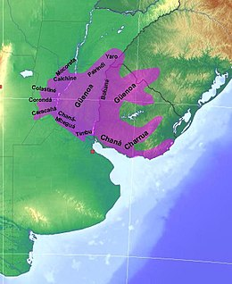

Ubicación
Ubicacion geografica

Inicialmente, ocupaban las dos márgenes del río Uruguay, desde Itapeiú hasta el delta del río, más adelante ampliaron sus dominios hasta las costas del río Paraná y ocuparon el sur del estado de Río Grande del Sur (en Brasil).
Ocuparon la Cuchilla de Haedo (es una cordillera de cuchillas que cruza el territorio norte de Uruguay y separa las aguas que confluyen en el Río Negro de las que lo hacen en el Río Uruguay). En 1730 se aliaron a los minuanes, que vivian al otro lado del rio Uruguay y se establecieron en las tierras cercanas a la laguna Merín y de la Laguna de los Patos.
Los guenoas o guanoo fueron indios patagónicos quienes vivían de forma errante en las tierras al este del río Uruguay, en el ángulo sudoeste de Rio Grande del Sur, que se extiende hacia el Océano Atlántico. Los guenoas son considerados charruas septentrionales. Los tres pueblos son de origen patagónico (patagones).